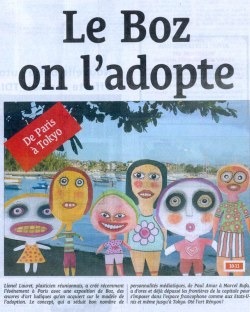

Adoptez un Boz
Depuis le 14 avril, la galerie Le Centaure de l'île sur l'île de la
Cité à Paris propose à ses visiteurs d'adopter un Boz. Cette
initiative instituée par Lionel Lauret, un artiste de la Réunion, est
aujourdh'ui présentée sur son site web adoptez 1 Boz (aujourd'hui disparu). Sur ce site, on y voit le portrait de quelques heureux Boz qui ne
demandent qu'à être adpoptés. On y découvre aussi les familles qui ont
la joie d'avoir adopté un Boz et tout plein de renseignements
pratiques pour réaliser cette louable démarche. La démarche est
tellement louable qu'elle a été saluée par le Quotidien de l'île.

Les Boz sont des petits êtres plats et en bois mesurant environ 40cm de hauteur. Ils sont les déscendants de totems et autres sculptures africaines et sont terriblements modernes. Cette démarche de l'adoption instituée par l'artiste Lionel Lauret a enchanté plus d'un visiteur de ses expos et il y a même des personnes listées qui se sont prètés au jeu. Lionel Lauret présente l'ensemble de ses activités sur son propre site. Les Boz bien sû r, mais aussi d'autres créations très colorées et ludiques que je vous laisse découvir. Lisez aussi son agenda pour voir si une opération d'adoption de Boz ne revient pas bientôt sur le devant de la scène, à Paris, à la Réunion ou ailleurs dans le monde
Lionel Lauret expose au mois de juillet 2005, certaines de ses oeuvres à la Galerie Vivre Art de Lisle-sur-la-Sorgue.